¡Bienvenido a BolPlay! El Escenario Virtual del Cine Boliviano.
Descubre Bolivia a través de BolPlay: Donde Cada Película Cuenta una Historia Única.
Explora Nuestro Universo Cinematográfico con BolPlay, tu Puerta de Entrada al Cine Boliviano.
¡Bolivia en tu Pantalla! Disfruta de la Autenticidad Cinematográfica en BolPlay.
Bienvenido a BolPlay, Donde la Magia del Cine Boliviano Cobra Vida.
Sumérgete en la Riqueza del Cine Nacional con BolPlay: Tu Destino para Películas Bolivianas Excepcionales.
Desde los Andes hasta tu Pantalla: BolPlay, la Plataforma de Streaming de Películas Bolivianas.
Explora, Sueña, Vive: BolPlay te Invita a una Experiencia Cinematográfica Única en Bolivia.
Con BolPlay, Cada Película es un Viaje a la Identidad y Cultura Boliviana.
¡Bolivia en BolPlay! Descubre, Disfruta y Conéctate con la Esencia del Cine Boliviano.
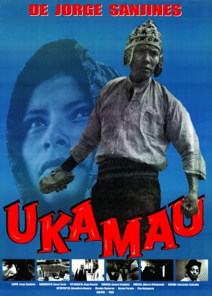
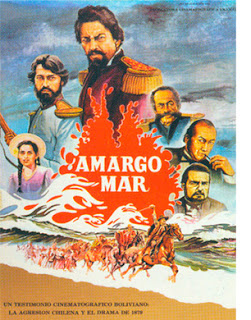
Cine
Estas son las peliculas que se estan presentando ahora mismo en el cine:
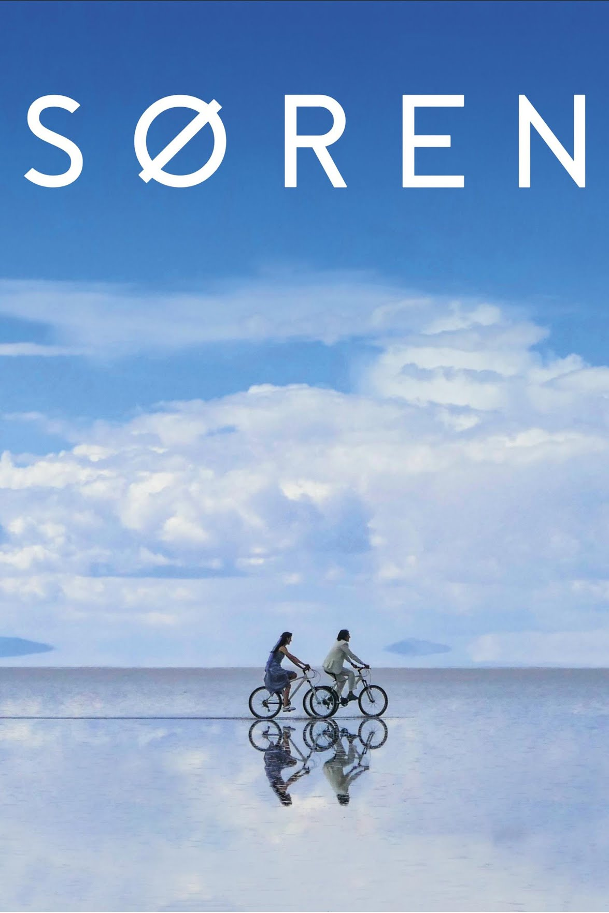
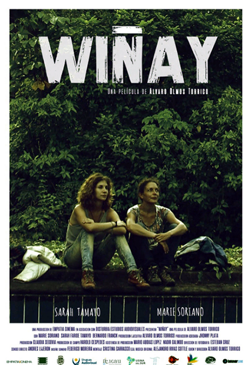
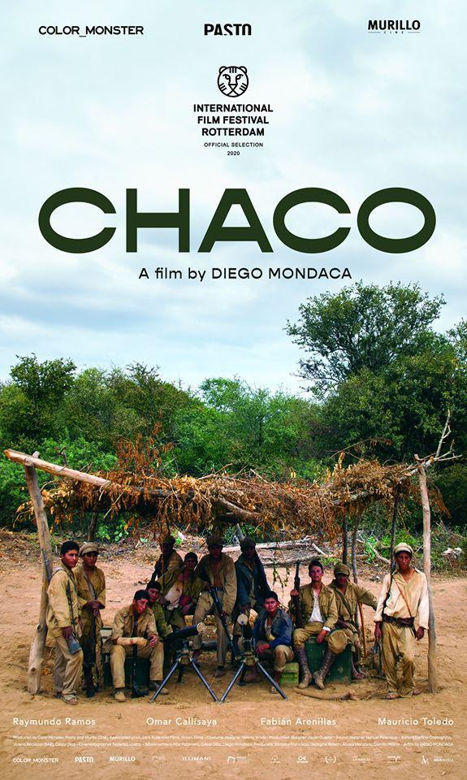
Esta película basada en hechos reales cuenta la historia de una lejana
comunidad Quechua, en la que un equipo del Cuerpo de Paz estadounidense se dedica a esterilizar a mujeres
indígenas sin su consentimiento. Ignacio, jefe de la Comunidad, descubre el crimen y toma represalias junto
a los comuneros.
Primera película filmada en aymara. En esta metáfora sobre la recuperación de
la soberanía indígena, una joven campesina aymara es violada y asesinada por un comerciante mestizo. Antes
de morir consigue decirle a su esposo el nombre del asesino.
En Amargo mar, un personaje de ficción, el Ing. Manuel Dávalos y su enamorada
una rabona tarijeña conocida como 'La Vidita', son los testigos conductores de este relato de intrigas y
mezquindades desplegadas por los presuntos héroes de aquella historia.
En el altiplano boliviano, una pareja de ancianos quechuas lleva años viviendo
la misma vida cotidiana. Durante una sequía inusualmente larga, Virginio y su esposa Sisa se enfrentan a un
dilema: resistir o ser derrotados por el entorno y el propio tiempo.
Paloma y Amaru tienen una relación casi perfecta — hasta que aparece Søren.
Místico, embustero o quizás solo un simple aventurero europeo, Søren tiene una profunda influencia en la
vida de la joven pareja, infectándolos de cuestionamientos y empujándolos a una búsqueda existencial.
“Wiñay” es la historia de Susana y Sole, dos mujeres con diferencias visibles
que inician un viaje a la selva para participar de un ritual de Ayahuasca. El filme es un viaje interior
sobre la amistad y el olvido.
Este drama histórico sobre la guerra del Chaco no representa la lucha
sangrienta, sino la historia de un pequeño regimiento boliviano que vaga por la inhóspita y seca llanura
chaqueña en 1934.
Después de que su madre lo expulsa de su casa, Sebastián, un chico de 15 años,
viaja a Guayaramerín, un pueblo en la frontera entre Bolivia y Brasil. Allí conoce a su padre y a la novia
de éste, Julieta, de quien se enamora.
Streaming
También tenemos una amplia variedad de peliculas que son transmitidas con la suscripción mensual,
algunas de ellas son las siguientes:
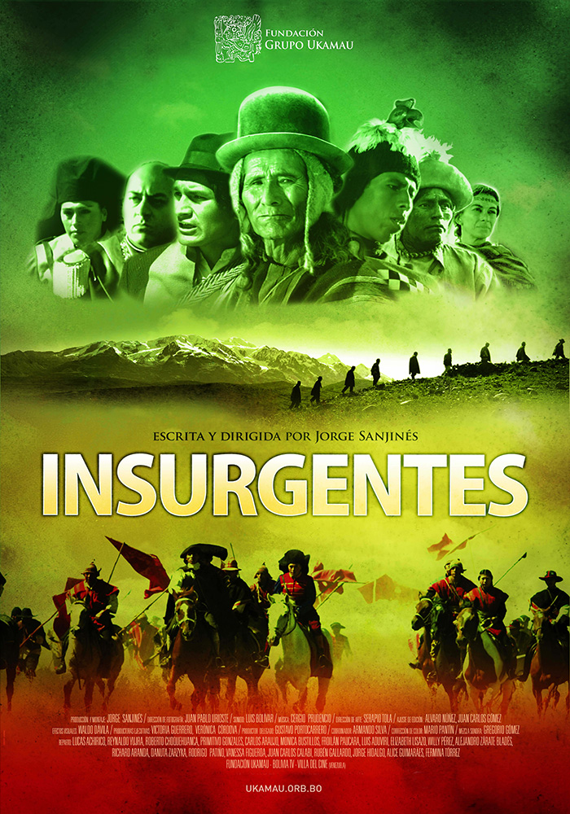
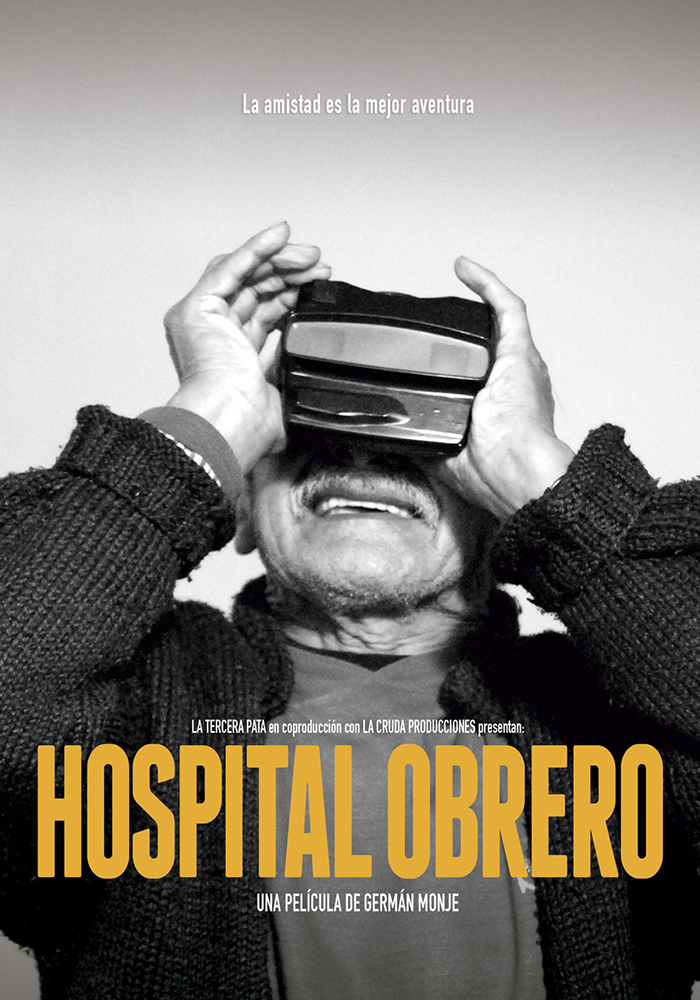
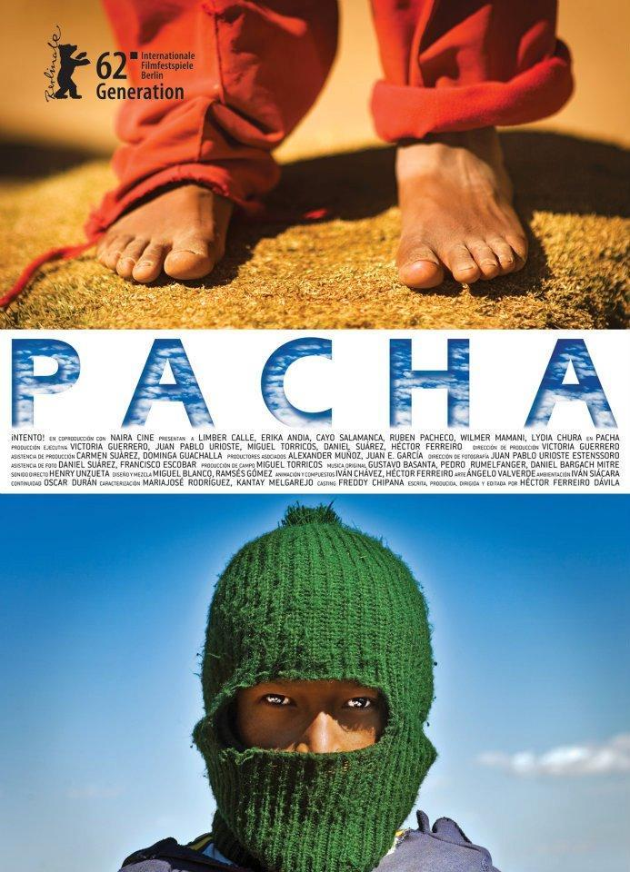
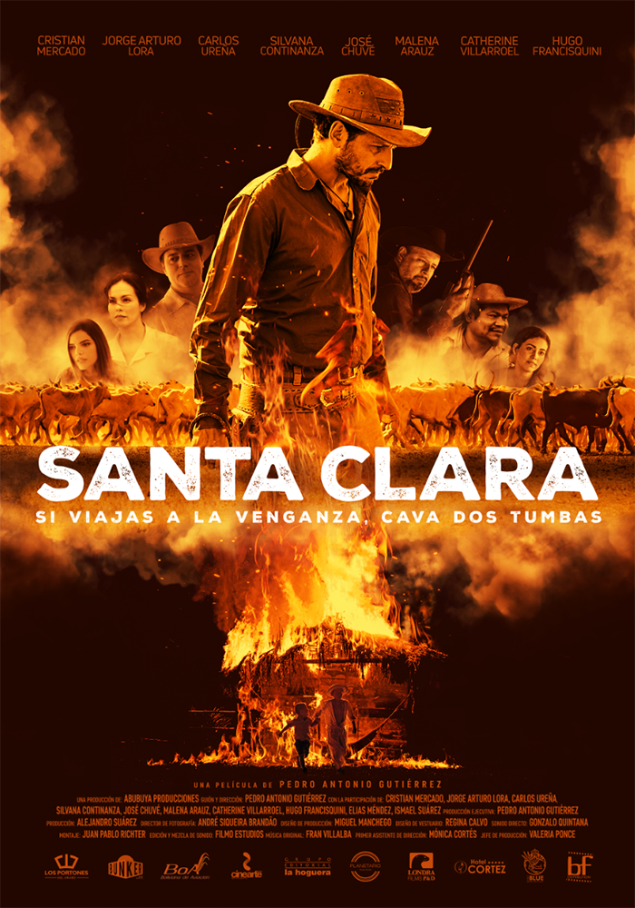
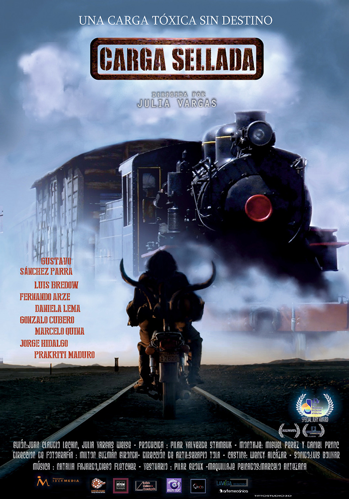
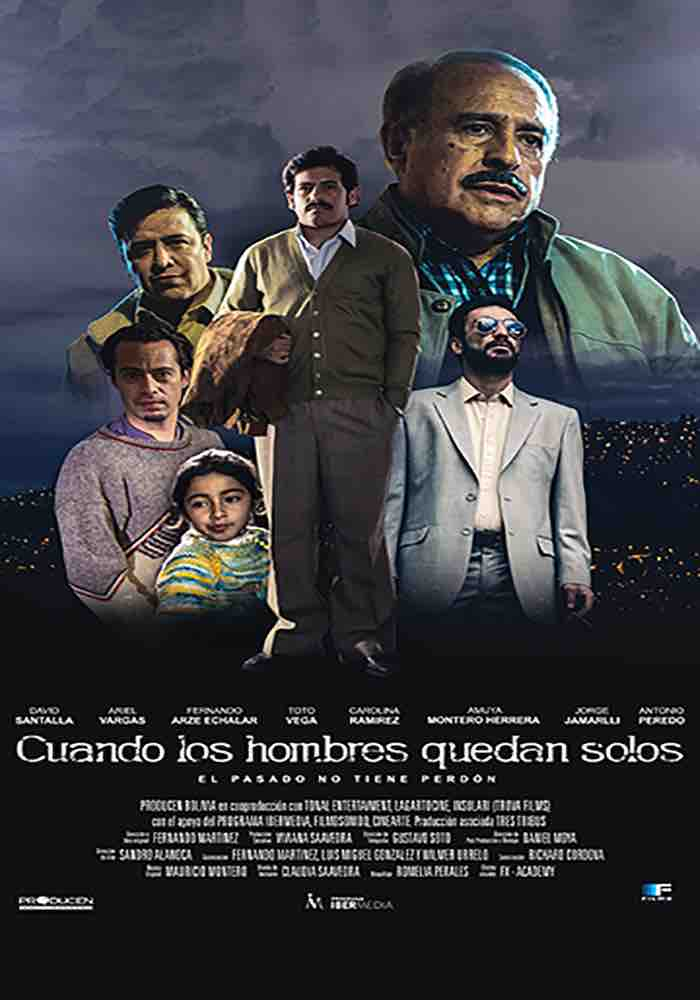
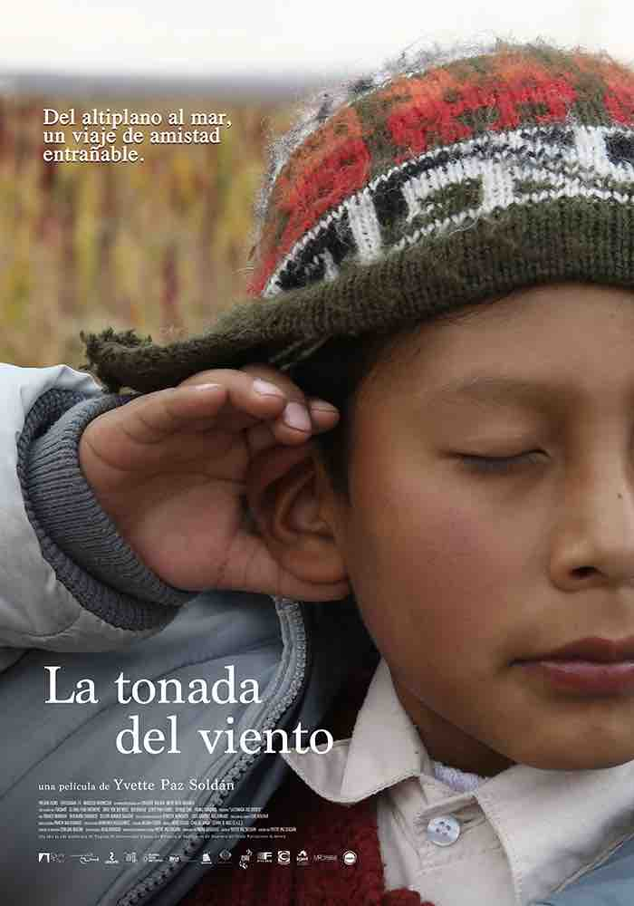
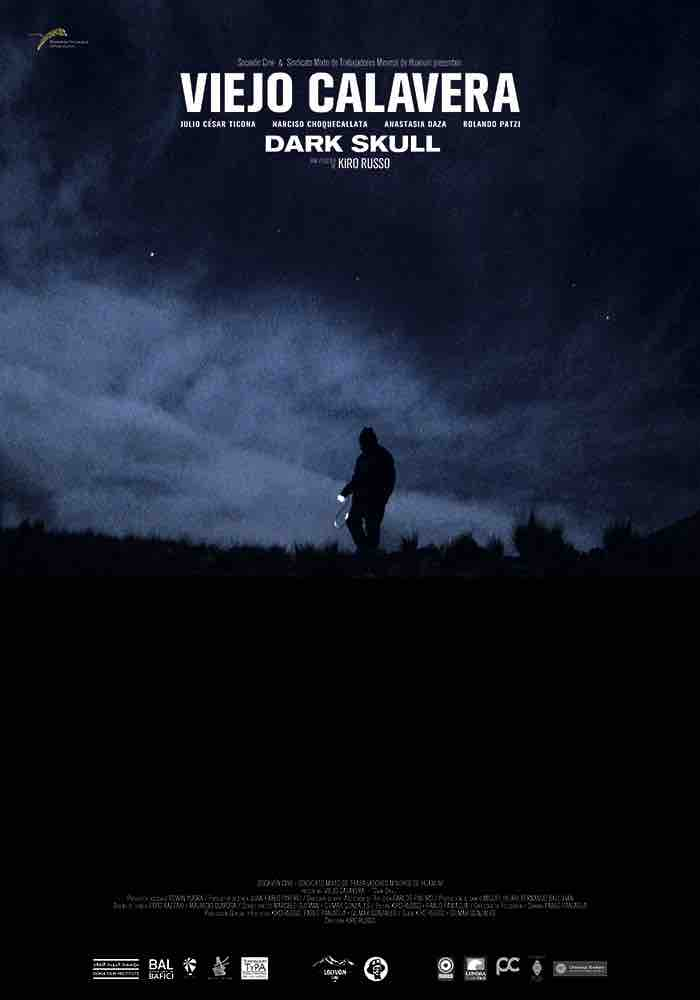
Reparto
"Sangre de Cóndor" es una película boliviana de 1969 dirigida por Jorge Sanjinés. Esta obra cinematográfica es
parte del movimiento cinematográfico y cultural denominado el "Nuevo Cine Latinoamericano", que buscaba retratar
la realidad social y política de América Latina. A continuación, te proporciono algunas palabras clave sobre el
reparto y la trama de "Sangre de Cóndor":